Chapters 5–8 presented tactical design patterns that define the different ways to implement a system’s components: how to model the business logic and how to organize the internals of a bounded context architecturally. In this chapter, we will step beyond the boundaries of a single component and discuss the patterns for organizing the flow of communication across a system’s elements.
The patterns you will learn about in this chapter facilitate cross-bounded context communication, address the limitations imposed by aggregate design principles, and orchestrate business processes spanning multiple system components.
A bounded context is the boundary of a model—a ubiquitous language. As you learned in Chapter 3, there are different patterns for designing communication across different bounded contexts. Suppose the teams implementing two bounded contexts are communicating effectively and willing to collaborate. In this case, the bounded contexts can be integrated in a partnership: the protocols can be coordinated in an ad hoc manner, and any integration issues can be effectively addressed through communication between the teams. Another cooperation-driven integration method is shared kernel: the teams extract and co-evolve a limited portion of a model; for example, extracting the bounded contexts’ integration contracts into a co-owned repository.
In a customer–supplier relationship, the balance of power tips toward either the upstream (supplier) or the downstream (consumer) bounded context. Suppose the downstream bounded context cannot conform to the upstream bounded context’s model. In this case, a more elaborate technical solution is required that can facilitate communication by translating the bounded contexts’ models.
This translation can be handled by one, or sometimes both, sides: the downstream bounded context can adapt the upstream bounded context’s model to its needs using an anticorruption layer (ACL), while the upstream bounded context can act as an open-host service (OHS) and protect its consumers from changes to its implementation model by using an integration-specific published language. Since the translation logic is similar for both the anticorruption layer and the open-host service, this chapter covers the implementation options without differentiating between the patterns and mentions the differences only in exceptional cases.
The model’s translation logic can be either stateless or stateful. Stateless translation happens on the fly, as incoming (OHS) or outgoing (ACL) requests are issued, while stateful translation involves a more complicated translation logic that requires a database. Let’s see design patterns for implementing both types of model translation.
For stateless model translation, the bounded context that owns the translation (OHS for upstream, ACL for downstream) implements the proxy design pattern to interject the incoming and outgoing requests and map the source model to the bounded context’s target model. This is depicted in Figure 9-1.
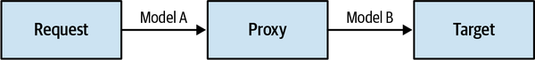
Implementation of the proxy depends on whether the bounded contexts are communicating synchronously or asynchronously.
The typical way to translate models used in synchronous communication is to embed the transformation logic in the bounded context’s codebase, as shown in Figure 9-2. In an open-host service, translation to the public language takes place when processing incoming requests, and in an anticorruption layer, it occurs when calling the upstream bounded context.
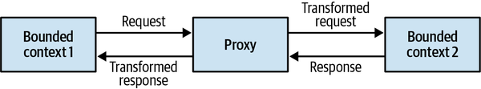
In some cases, it can be more cost-effective and convenient to offload the translation logic to an external component such as an API gateway pattern. The API gateway component can be an open source software-based solution such as Kong or KrakenD, or it can be a cloud vendor’s managed service such as AWS API Gateway, Google Apigee, or Azure API Management.
For bounded contexts implementing the open-host pattern, the API gateway is responsible for converting the internal model into the integration-optimized published language. Moreover, having an explicit API gateway can alleviate the process of managing and serving multiple versions of the bounded context’s API, as depicted in Figure 9-3.
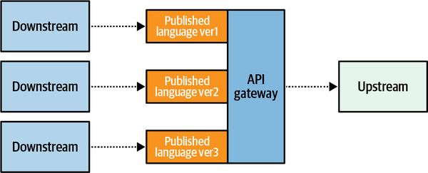
Anticorruption layers implemented using an API gateway can be consumed by multiple downstream bounded contexts. In such cases, the anticorruption layer acts as an integration-specific bounded context, as shown in Figure 9-4.
Such bounded contexts, which are mainly in charge of transforming models for more convenient consumption by other components, are often referred to as interchange contexts.
To translate models used in asynchronous communication you can implement a message proxy: an intermediary component subscribing to messages coming from the source bounded context. The proxy will apply the required model transformations and forward the resultant messages to the target subscriber (see Figure 9-5).
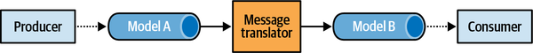
In addition to translating the messages’ model, the intercepting component can also reduce the noise on the target bounded context by filtering out irrelevant messages.
Asynchronous model translation is essential when implementing an open host service. It’s a common mistake to design and expose a published language for the model’s objects and allow domain events to be published as they are, thereby exposing the bounded context’s implementation model. Asynchronous translation can be used to intercept the domain events and convert them into a published language, thus providing better encapsulation of the bounded context’s implementation details (see Figure 9-6).
Moreover, translating messages to the published language enables differentiating between private events that are intended for the bounded context’s internal needs and public events that are designed for integration with other bounded contexts. We’ll revisit and expand on the topic of private/public events in Chapter 15, where we discuss the relationship between domain-driven design and event-driven architecture.
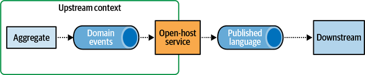
For more significant model transformations—for example, when the translation mechanism has to aggregate the source data or unify data from multiple sources into a single model—a stateful translation may be required. Let’s discuss each of these use cases in detail.
Let’s say a bounded context is interested in aggregating incoming requests and processing them in batches for performance optimization. In this case, aggregation may be required both for synchronous and asynchronous requests (see Figure 9-7).
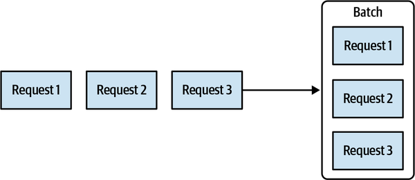
Another common use case for aggregation of source data is combining multiple fine-grained messages into a single message containing the unified data, as depicted in Figure 9-8.
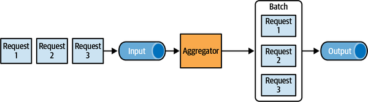
Model transformation that aggregates incoming data cannot be implemented using an API gateway, and thus requires more elaborate, stateful processing. To track the incoming data and process it accordingly, the translation logic requires its own persistent storage (see Figure 9-9).
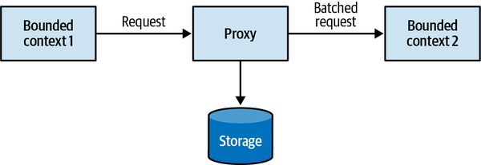
In some use cases, you can avoid implementing a custom solution for a stateful translation by using off-the-shelf products; for example, a stream-process platform (Kafka, AWS Kinesis, etc.), or a batching solution (Apache NiFi, AWS Glue, Spark, etc.).
A bounded context may need to process data aggregates from multiple sources, including other bounded contexts. A typical example for this is the backend-for-frontend pattern,1 in which the user interface has to combine data originating from multiple services.
Another example is a bounded context that must process data from multiple other contexts and implement complex business logic to process all the data. In this case, it can be beneficial to decouple the integration and business logic complexities by fronting the bounded context with an anticorruption layer that aggregates data from all other bounded contexts, as shown in Figure 9-10.
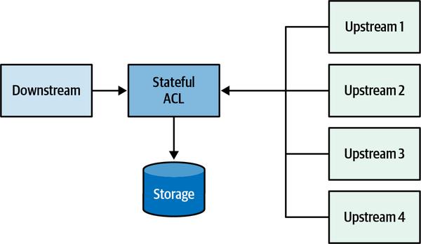
In Chapter 6, we discussed that one of the ways aggregates communicate with the rest of the system is by publishing domain events. External components can subscribe to these domain events and execute their logic. But how are domain events published to a message bus?
Before we get to the solution, let’s examine a few common mistakes in the event publishing process and the consequences of each approach. Consider the following code:
01publicclassCampaign02{03...04List<DomainEvent>_events;05IMessageBus_messageBus;06...0708publicvoidDeactivate(stringreason)09{10for(lin_locations.Values())11{12l.Deactivate();13}1415IsActive=false;1617varnewEvent=newCampaignDeactivated(_id,reason);18_events.Append(newEvent);19_messageBus.Publish(newEvent);20}21}
On line 17, a new event is instantiated. On the following two lines, it is appended to the aggregate’s internal list of domain events (line 18), and the event is published to the message bus (line 19). This implementation of publishing domain events is simple but wrong. Publishing the domain event right from the aggregate is bad for two reasons. First, the event will be dispatched before the aggregate’s new state is committed to the database. A subscriber may receive the notification that the campaign was deactivated, but it would contradict the campaign’s state. Second, what if the database transaction fails to commit because of a race condition, subsequent aggregate logic rendering the operation invalid, or simply a technical issue in the database? Even though the database transaction is rolled back, the event is already published and pushed to subscribers, and there is no way to retract it.
Let’s try something else:
01publicclassManagementAPI02{03...04privatereadonlyIMessageBus_messageBus;05privatereadonlyICampaignRepository_repository;06...07publicExecutionResultDeactivateCampaign(CampaignIdid,stringreason)08{09try10{11varcampaign=repository.Load(id);12campaign.Deactivate(reason);13_repository.CommitChanges(campaign);1415varevents=campaign.GetUnpublishedEvents();16for(IDomainEventeinevents)17{18_messageBus.publish(e);19}20campaign.ClearUnpublishedEvents();21}22catch(Exceptionex)23{24...25}26}27}
In the preceding listing, the responsibility of publishing new domain events is shifted to the application layer. On lines 11 through 13, the relevant instance of the Campaign aggregate is loaded, its Deactivate command is executed, and only after the updated state is successfully committed to the database, on lines 15 through 20, are the new domain events published to the message bus. Can we trust this code? No.
In this case, the process running the logic for some reason fails to publish the domain events. Perhaps the message bus is down. Or the server running the code fails right after committing the database transaction, but before publishing the events the system will still end in an inconsistent state, which means that the database transaction is committed, but the domain events will never be published.
These edge cases can be addressed using the outbox pattern.
The outbox pattern (Figure 9-11) ensures reliable publishing of domain events using the following algorithm:
Both the updated aggregate’s state and the new domain events are committed in the same atomic transaction.
A message relay fetches newly committed domain events from the database.
The relay publishes the domain events to the message bus.
Upon successful publishing, the relay either marks the events as published in the database or deletes them completely.
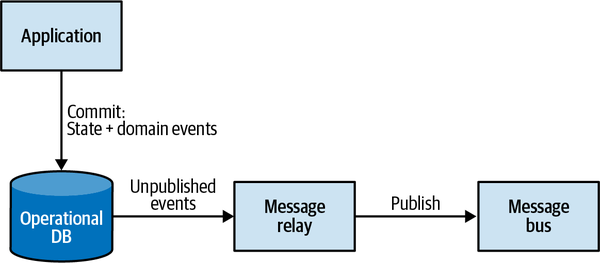
When using a relational database, it’s convenient to leverage the database’s ability to commit to two tables atomically and use a dedicated table for storing the messages, as shown in Figure 9-12.
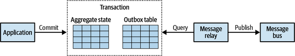
When using a NoSQL database that doesn’t support multidocument transactions, the outgoing domain events have to be embedded in the aggregate’s record. For example:
{"campaign-id":"364b33c3-2171-446d-b652-8e5a7b2be1af","state":{"name":"Autumn 2017","publishing-state":"DEACTIVATED","ad-locations":[...]...},"outbox":[{"campaign-id":"364b33c3-2171-446d-b652-8e5a7b2be1af","type":"campaign-deactivated","reason":"Goals met","published":false}]}
In this sample, you can see the JSON document’s additional property, outbox, containing a list of domain events that have to be published.
The publishing relay can fetch the new domain events in either a pull-based or push-based manner:
It’s important to note that the outbox pattern guarantees delivery of the messages at least once: if the relay fails right after publishing a message but before marking it as published in the database, the same message will be published again in the next iteration.
Next, we’ll take a look at how we can leverage the reliable publishing of domain events to overcome some of the limitations imposed by aggregate design principles.
One of the core aggregate design principles is to limit each transaction to a single instance of an aggregate. This ensures that an aggregate’s boundaries are carefully considered and encapsulate a coherent set of business functionality. But there are cases when you have to implement a business process that spans multiple aggregates.
Consider the following example: when an advertising campaign is activated, it should automatically submit the campaign’s advertising materials to its publisher. Upon receiving the confirmation from the publisher, the campaign’s publishing state should change to Published. In the case of rejection by the publisher, the campaign should be marked as Rejected.
This flow spans two business entities: advertising campaign and publisher. Co-locating the entities in the same aggregate boundary would definitely be overkill, as these are clearly different business entities that have different responsibilities and may belong to different bounded contexts. Instead, this flow can be implemented as a saga.
A saga is a long-running business process. It’s long running not necessarily in terms of time, as sagas can run from seconds to years, but rather in terms of transactions: a business process that spans multiple transactions. The transactions can be handled not only by aggregates but by any component emitting domain events and responding to commands. The saga listens to the events emitted by the relevant components and issues subsequent commands to the other components. If one of the execution steps fails, the saga is in charge of issuing relevant compensating actions to ensure the system state remains consistent.
Let’s see how the advertising campaign publishing flow from the preceding example can be implemented as a saga, as shown in Figure 9-13.
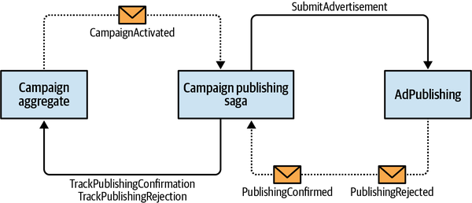
To implement the publishing process, the saga has to listen to the CampaignActivated event from the Campaign aggregate and the PublishingConfirmed and PublishingRejected events from the AdPublishing bounded context. The saga has to execute the SubmitAdvertisement command on AdPublishing, and the TrackPublishingConfirmation and TrackPublishingRejection commands on the Campaign aggregate. In this example, the TrackPublishingRejection command acts as a compensation action that will ensure that the advertising campaign is not listed as active. Here is the code:
publicclassCampaignPublishingSaga{privatereadonlyICampaignRepository_repository;privatereadonlyIPublishingServiceClient_publishingService;...publicvoidProcess(CampaignActivated@event){varcampaign=_repository.Load(@event.CampaignId);varadvertisingMaterials=campaign.GenerateAdvertisingMaterials();_publishingService.SubmitAdvertisement(@event.CampaignId,advertisingMaterials);}publicvoidProcess(PublishingConfirmed@event){varcampaign=_repository.Load(@event.CampaignId);campaign.TrackPublishingConfirmation(@event.ConfirmationId);_repository.CommitChanges(campaign);}publicvoidProcess(PublishingRejected@event){varcampaign=_repository.Load(@event.CampaignId);campaign.TrackPublishingRejection(@event.RejectionReason);_repository.CommitChanges(campaign);}}
The preceding example relies on the messaging infrastructure to deliver the relevant events, and it reacts to the events by executing the relevant commands. This is an example of a relatively simple saga: it has no state. You will encounter sagas that do require state management; for example, to track the executed operations so that relevant compensating actions can be issued in case of a failure. In such a situation, the saga can be implemented as an event-sourced aggregate, persisting the complete history of received events and issued commands. However, the command execution logic should be moved out of the saga itself and executed asynchronously, similar to the way domain events are dispatched in the outbox pattern:
publicclassCampaignPublishingSaga{privatereadonlyICampaignRepository_repository;privatereadonlyIList<IDomainEvent>_events;...publicvoidProcess(CampaignActivatedactivated){varcampaign=_repository.Load(activated.CampaignId);varadvertisingMaterials=campaign.GenerateAdvertisingMaterials();varcommandIssuedEvent=newCommandIssuedEvent(target:Target.PublishingService,command:newSubmitAdvertisementCommand(activated.CampaignId,advertisingMaterials));_events.Append(activated);_events.Append(commandIssuedEvent);}publicvoidProcess(PublishingConfirmedconfirmed){varcommandIssuedEvent=newCommandIssuedEvent(target:Target.CampaignAggregate,command:newTrackConfirmation(confirmed.CampaignId,confirmed.ConfirmationId));_events.Append(confirmed);_events.Append(commandIssuedEvent);}publicvoidProcess(PublishingRejectedrejected){varcommandIssuedEvent=newCommandIssuedEvent(target:Target.CampaignAggregate,command:newTrackRejection(rejected.CampaignId,rejected.RejectionReason));_events.Append(rejected);_events.Append(commandIssuedEvent);}}
In this example, the outbox relay will have to execute the commands on relevant endpoints for each instance of CommandIssuedEvent. As in the case of publishing domain events, separating the transition of the saga’s state from the execution of commands ensures that the commands will be executed reliably, even if the process fails at any stage.
Although the saga pattern orchestrates a multicomponent transaction, the states of the involved components are eventually consistent. And although the saga will eventually execute the relevant commands, no two transactions can be considered atomic. This correlates with another aggregate design principle:
Only the data within an aggregate’s boundaries can be considered strongly consistent. Everything outside is eventually consistent.
Use this as a guiding principle to make sure you are not abusing sagas to compensate for improper aggregate boundaries. Business operations that have to belong to the same aggregate require strongly consistent data.
The saga pattern is often confused with another pattern: process manager. Although the implementation is similar, these are different patterns. In the next section, we’ll discuss the purpose of the process manager pattern and how it differs from the saga pattern.
The saga pattern manages simple, linear flow. Strictly speaking, a saga matches events to the corresponding commands. In the examples we used to demonstrate saga implementations, we actually implemented simple matching of events to commands:
CampaignActivated event to PublishingService.SubmitAdvertisement command
PublishingConfirmed event to Campaign.TrackConfirmation command
PublishingRejected event to Campaign.TrackRejection command
The process manager pattern, shown in Figure 9-14, is intended to implement a business-logic-based process. It is defined as a central processing unit that maintains the state of the sequence and determines the next processing steps.2
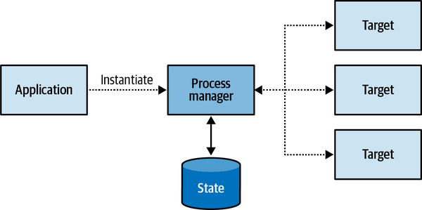
As a simple rule of thumb, if a saga contains if-else statements to choose the correct course of action, it is probably a process manager.
Another difference between a process manager and a saga is that a saga is instantiated implicitly when a particular event is observed, as in CampaignActivated in the preceding examples. A process manager, on the other hand, cannot be bound to a single source event. Instead, it’s a coherent business process consisting of multiple steps. Hence, a process manager has to be instantiated explicitly. Consider the following example:
Booking a business trip starts with the routing algorithm choosing the most cost-effective flight route and asking the employee to approve it. In case the employee prefers a different route, their direct manager needs to approve it. After the flight is booked, one of the preapproved hotels has to be booked for the appropriate dates. If no hotels are available, the flight tickets have to be canceled.
In this example, there is no central entity to trigger the trip booking process. The trip booking is the process and it has to be implemented as a process manager (see Figure 9-15).
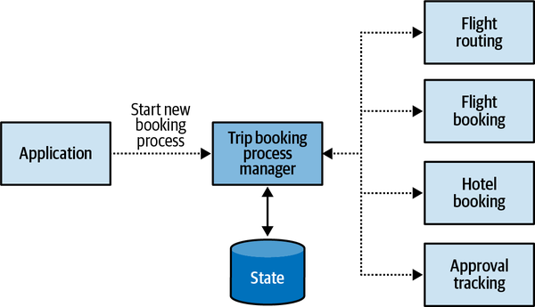
From an implementation perspective, process managers are often implemented as aggregates, either state based or event sourced. For example:
publicclassBookingProcessManager{privatereadonlyIList<IDomainEvent>_events;privateBookingId_id;privateDestination_destination;privateTripDefinition_parameters;privateEmployeeId_traveler;privateRoute_route;privateIList<Route>_rejectedRoutes;privateIRoutingService_routing;...publicvoidInitialize(Destinationdestination,TripDefinitionparameters,EmployeeIdtraveler){_destination=destination;_parameters=parameters;_traveler=traveler;_route=_routing.Calculate(destination,parameters);varrouteGenerated=newRouteGeneratedEvent(BookingId:_id,Route:_route);varcommandIssuedEvent=newCommandIssuedEvent(command:newRequestEmployeeApproval(_traveler,_route));_events.Append(routeGenerated);_events.Append(commandIssuedEvent);}publicvoidProcess(RouteConfirmedconfirmed){varcommandIssuedEvent=newCommandIssuedEvent(command:newBookFlights(_route,_parameters));_events.Append(confirmed);_events.Append(commandIssuedEvent);}publicvoidProcess(RouteRejectedrejected){varcommandIssuedEvent=newCommandIssuedEvent(command:newRequestRerouting(_traveler,_route));_events.Append(rejected);_events.Append(commandIssuedEvent);}publicvoidProcess(ReroutingConfirmedconfirmed){_rejectedRoutes.Append(route);_route=_routing.CalculateAltRoute(destination,parameters,rejectedRoutes);varrouteGenerated=newRouteGeneratedEvent(BookingId:_id,Route:_route);varcommandIssuedEvent=newCommandIssuedEvent(command:newRequestEmployeeApproval(_traveler,_route));_events.Append(confirmed);_events.Append(routeGenerated);_events.Append(commandIssuedEvent);}publicvoidProcess(FlightBookedbooked){varcommandIssuedEvent=newCommandIssuedEvent(command:newBookHotel(_destination,_parameters));_events.Append(booked);_events.Append(commandIssuedEvent);}...}
In this example, the process manager has its explicit ID and persistent state, describing the trip that has to be booked. As in the earlier example of a saga pattern, the process manager subscribes to events that control the workflow (RouteConfirmed, RouteRejected, ReroutingConfirmed, etc.), and it instantiates events of type CommandIssuedEvent that will be processed by an outbox relay to execute the actual commands.
In this chapter, you learned the different patterns for integrating a system’s components. The chapter began by exploring patterns for model translations that can be used to implement anticorruption layers or open-host services. We saw that translations can be handled on the fly or can follow a more complex logic, requiring state tracking.
The outbox pattern is a reliable way to publish aggregates’ domain events. It ensures that domain events are always going to be published, even in the face of different process failures.
The saga pattern can be used to implement simple cross-component business processes. More complex business processes can be implemented using the process manager pattern. Both patterns rely on asynchronous reactions to domain events and the issuing of commands.
Which bounded context integration pattern requires implementation of model transformation logic? Select all that apply.
Conformist
Anticorruption layer
Open-host service
What is the goal of the outbox pattern?
Decouple messaging infrastructure from the system’s business logic layer
Reliably publish messages
Support implementation of the event-sourced domain model pattern
Apart from publishing messages to a message bus, are there other possible use cases for the outbox pattern?
Yes
No
What are the differences between the saga and process manager patterns? Select all that apply.
A process manager requires explicit instantiation, while a saga is executed when a relevant domain event is published.
Contrary to a saga, a process manager never requires persistence of its execution state.
A saga requires the components it manipulates to implement the event sourcing pattern, while a process manager doesn’t.
The process manager pattern is suitable for complex business workflows.